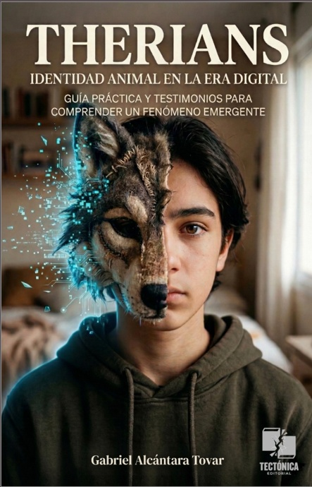
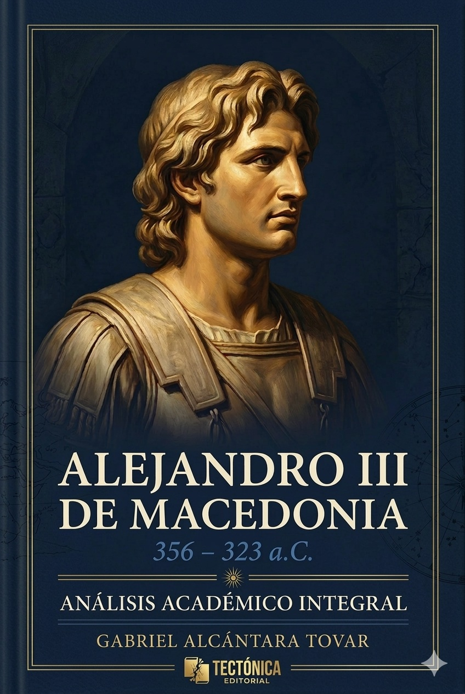

TECTÓNICA EDITORIAL
"Tender puentes allí donde el desconocimiento ha levantado muros. Investigar con rigor académico bajo la perspectiva humanista biosférica."

VOL. 001: THERIANS

VOL. 002: ALEJANDRO III
"Tender puentes allí donde el desconocimiento ha levantado muros. Investigar con rigor académico bajo la perspectiva humanista biosférica."

VOL. 001: THERIANS

VOL. 002: ALEJANDRO III